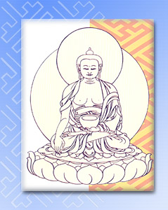

|
|

|
|

|
Prince Siddharta was born as the son of a royal family in India over 2500 years ago. As a
youth, he enjoyed all the pleasures of the nobility. At the age of
twenty-eight he ventured beyond the confines of his privileged life at the
palace and for the first time he fathomed the suffering of human existence
in terms of aging, sickness, and death. Moved by compassion for the plight
of others, and recognizing that he, too, would have to face such
suffering, he renounced his life of luxury and devoted himself to the
quest for ultimate liberation from suffering and its source. While sitting
under the Bodhi Tree he reached the state of perfect enlightenment, in
which he was freed from all mental afflictions, and all virtues were
brought to fulfillment. The Prince became the Buddha Shakyamuni.
Thereafter, he dedicated himself completely to serving the needs of others
by teaching the true causes of suffering and the path to Liberation and
Enlightenment.
|
|
|
|